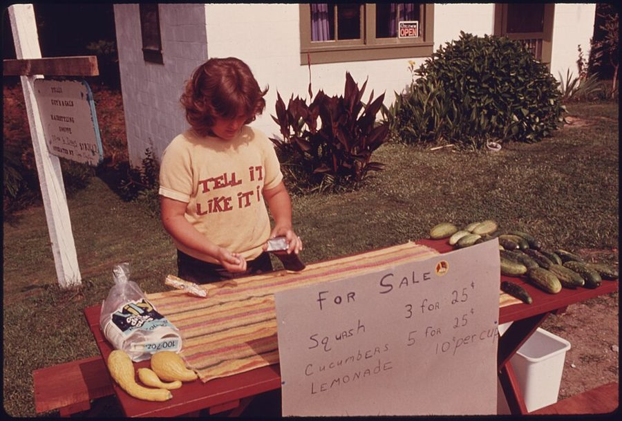
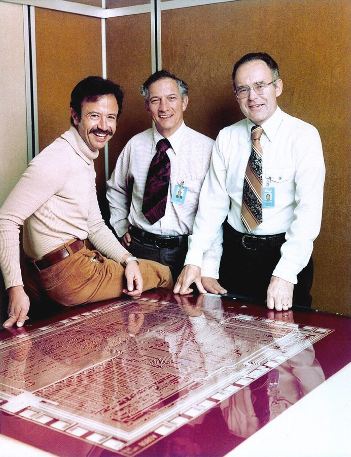
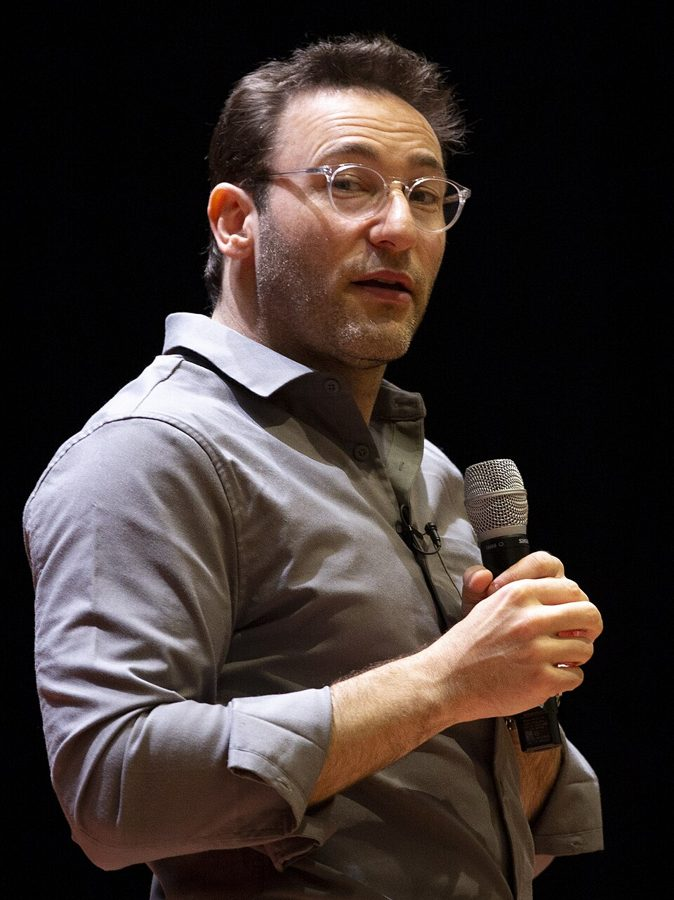

这一章在做什么
刚当上经理的人，常把这份工作想成一串活动：开会、给反馈、决定谁升谁走。这一章问的是更根本的事：经理的工作到底是什么，凭什么说一个经理干得好？作者用一个虚构的柠檬水摊从头讲起，中间有上司 Chris Cox 的评估办法、一位被她劝上管理岗又辞职的设计师、一个她自己想出来却没人买账的点子。读的时候抓两条线：经理靠团队的结果来衡量；领导力不随头衔一起发下来。作者说，后面的一切都从这一章的定义推出来。

1975 年 7 月，美国佐治亚州乡间路边的一个小摊：牌子上写着黄瓜五根 25 美分，柠檬水一杯 10 美分。和本书无关；作者的柠檬水摊是她编的例子，全章都从这样一个小摊讲起（§1）。Al Stephenson，公有领域，维基共享资源 读之前：这一章在全书的哪里
引言里，作者 25 岁被上司问要不要当经理，第一次和下属一对一就被对方的脸色吓住，并许下全书的承诺：好经理是练出来的（§5 开头回扣了这句话）。这一章先回答经理到底干什么。下一章讲当上经理的四种方式和头三个月，第 3 章讲带小团队，§6 最后一段就是在为这两章开头。§3 点到的开会、做计划、培养文化，后面各有专章。
§3 说经理的角色不是自己干活，哪怕你干得最好。这句话带着团队高速扩张、人手充足的底色。2023 年起不少大公司砍管理层级、把不少经理转回一线干活，读的时候别把它当铁律，详见「本站怎么看」。
读的时候带着这几个问题。不用先找答案，读完回来对照「检查一下理解」。
作者说经理的工作是让一群人一起做出更好的结果。照这个定义，你带人的时候，有没有哪段日子其实是在当组里最能干的那个组员？§3
Chris Cox 评经理，一半看团队的成绩，一半看团队的状态。只看前一半，会漏掉什么？§2
作者用三个自问判断一个人适不适合当经理。哪一个对你最难回答？§5
作者说领导力不能被授予，只能赢来。你见过手里没有头衔、大家却愿意跟着走的人吗？§6
分节地图
这一章的每一节一条，按原书顺序。粗体是本站给的节名，后面是档和英文词数；下面一行是原书小标题、纸书页码和这一节开头几个英文词；再下面是译本的小標題和开头几个字，在译本电子书里搜它就能跳过去。每节标了档：「先读」是这一章的骨架，「有空」例子更多、讲得更细，跳过不丢线。读完打个勾。
作者 2006 年进 Facebook 时，连管理是什么都不懂。两份「经理的工作」清单，一份是新手时写的，一份是干了三年以后写的，她说两份都还不对。足球员的比方引出本章的问题。 柠檬水摊从一个人干到请来两个邻居，引出全书的一句话定义。留意作者说当不当经理和雇不雇人、发不发工资无关，关键是你不再一个人做事。 怎么判断经理好坏：看团队的结果，不看经理多忙。引了 Andy Grove 的「产出和活动」，承认短期难判，最后是 Chris Cox 一半一半的评估法。 全章的核心。前半把经理的事归成目标、人、流程三类，开头引了哈克曼的团队研究；后半是卖柠檬水的算术，讲培训和招人为什么比自己卖更划算，也就是「乘数效应」。 一个例外：团队快活不下去时，先保命，长远投资往后放。借马斯洛的需求层次打比方。很短，它给前面的原则划了边界。 先是王牌设计师当上经理一年就辞职的故事，然后三个自问、三个不一定靠得住的理由。「想说了算」那一小节里，有作者开车回家路上想出的点子。 经理是一个职位，领导力是一种能力：好经理必须会领导，会领导的人不必是经理。结尾回到作者自己，头衔变了那天，她并没有变成领导者。
先用中文过一遍：这一章的概念
先把这一章用到、作者默认你懂的几个概念讲一遍。讲的是概念本身和它在管理界的来历，作者拿它推出什么，读原书时自己看。
§2 经理的产出和乘数效应 managerial output / multiplier effect 「经理的产出」是 Andy Grove 1983 年在《High Output Management》里的说法。他把它写成一个式子：经理的产出 = 他带的组织的产出 + 受他影响的相邻组织的产出。经理自己写了多少代码、画了多少稿不单独算，算的是他带的人和他影响到的人做出了什么。他还用「杠杆」衡量经理的活动：同样一小时，开一个让八个人少走弯路的会，比自己埋头干一小时的杠杆高得多。
「乘数效应」是作者借来的说法，和经济学里政府花一块钱带动几块钱需求的「乘数」不是一回事。她的意思是：经理做的事要让全队的产出成倍地涨，而不是自己再添一份。容易混的是产出和活动：开会、回邮件、加班是活动，客户用上了什么、卖出去多少才是产出。
时间
团队累计的产出
回本点
加法：经理自己上阵
乘法：先培训、招人
先付出：这段时间少干
本站示意图，不按书里的数字画。花时间培养人，开头团队的产出反而少；过了回本点，差距越拉越大。
在这一章： §2 作者引了 Grove「看产出不看活动」那句话，没有引这个式子；§3 用卖柠檬水的算术讲乘数效应，那是她自己的用法。
§3 目标、人、流程 purpose, people, process 这是作者自己的分法：经理一天里的大小事都能归进三类。目标回答「为什么做」，人回答「谁来做」，流程回答「大家怎么一起做」。管理学里没有一个公认的「三根杠杆」，类似的三分法倒很多，IT 圈常说「人、流程、技术」。作者把目标也叫作 why，和 Simon Sinek 2009 年「黄金圈」从 why 讲到 how、what 的说法相通。
更有研究根据的是 Richard Hackman 的团队有效性条件，作者在 §3 开头也引了。两者放在一起对照，能看出一件作者没有明说的事：哈克曼说的「组织环境的支持」（资源、信息、奖励制度）落在三根杠杆之外，一线经理往往管不着，得向上争取。
哈克曼的团队条件
有吸引力的方向
真正的团队 · 专家指导
支持做事的结构
目标 为什么做 why
人 谁来做 who
流程 怎么一起做 how
团队的结果
组织环境的支持 在三类之外
本站的对照图。上一行是哈克曼条件的简称，下一行是作者的三类事；哪条对哪类是本站的归法，完整的说法见纸书 p.21–22。
在这一章： §3 的主干。后半讲乘数效应时作者说，经理要做的就是在这三样上使劲。
§5 双通道晋升 individual contributor track / management track 不带人、靠自己的专业做事的人，硅谷叫「独立贡献者」（individual contributor，IC）。双通道是说：工程师、设计师升到一定级别后，可以往经理走，也可以留在 IC 通道上继续升，级别和薪酬能和经理对齐。这种做法 1950 年代在美国企业的研发实验室里就有了，为的是留住不想当官的科学家和工程师。
今天的硅谷大公司，IC 通道往上有 Staff、Principal 一类的高级别，各家叫法不同；国内大厂也有类似的设计，比如阿里的 P 序列和 M 序列。容易混的是「有两条通道」和「两条通道真的对等」：不少公司纸面上有双通道，IC 越往上名额越少，拍板的权力也多在经理手里。
在这一章： §5「想在职业上更进一步」那一小节：作者说在支持 IC 成长的公司里，当经理是转岗，不是升职。
§6 领导力和管理职位 leadership / management 「管理者和领导者有什么不同」是管理学的老题目。Abraham Zaleznik 1977 年在《哈佛商业评论》上专门写过；最常被引的是 John Kotter 1990 年的《领导者真正做什么》：管理是应对复杂（做计划和预算、安排人手、控制和解决问题），领导是应对变化（定方向、把人拢到一起、激励人）。他说两者互补，组织两样都要，领导力也和个人魅力无关。
作者换了一个角度：经理是一个职位，可以任命，也可以撤掉；领导力是引导和影响别人的能力，谁都可以有。Kotter 分的是两类活动，作者分的是职位和能力，读的时候别把两种分法混成一回事。
有经理的职位 →
能影响别人
不带人的领导者 没有头衔，大家愿意跟
作者说的好经理 职位加上信任
普通的一员 此刻是跟随的人
只有头衔的经理 下属照做，不尽力
本站示意图。职位是横轴，能不能影响别人是纵轴，两样不一定同时有。
在这一章： §6 整节。可以对照引言里作者第一次和下属一对一时，对方那张不买账的脸。
遇到这些事：情境卡
以后带人碰到这些事，从这里查。每张卡先说动手前要想清楚什么，再用本站的话转述作者的办法（不照抄原书的清单），然后是书外的补充和最容易犯的错，最后指回书里讲它的那一节和纸书页码。全书的情境卡汇总在情境卡 。
§3 当了经理还是忍不住自己写代码，团队的事没人管
先想清楚 你自己接的那部分活，是团队里真没人能做，还是你做得更快、更舒服？你埋头干活的这些天，有没有一件只有经理才能做的事被拖着？
作者的办法 把时间当投资来算：自己干，只是给团队的产出加一份；同样的时间拿去培训人、招来更强的人，产出可能成倍地涨。 投资要先付出：培训会占掉你自己能干的那份活，要过一阵才回本。 衡量自己，看团队的结果，不看自己干了多少。 本站补充 完全不碰一线也有代价：判断力会钝，评审代码、估工期时心里没底。Google 2008 年起做的 Project Oxygen 总结好经理的行为，其中一条就是有足够的技术能力给团队出主意。折中的做法是留一小块不在关键路径上的活自己做（工具、原型、代码评审），别接团队等着要的那一块。
小心 接下关键路径上最难的那块，你一开会它就停，全队等你；团队里出了问题，你因为埋头干活，最后一个知道。
书里：The Three Things Managers Think About All Day，纸书 p.24–26
§4 团队天天救火，你分不清这是生死关头还是常态
先想清楚 作者说的求生模式是生死关头：借的钱两周内还不上、摊子眼看要关门。日常的线上故障、需求插队不是这个意思。先问一句：这把火不救，团队或公司下个月还在不在？
作者的办法 真到了生死关头，长远的事先放下，做一切能活下来的事，包括经理自己卷起袖子上阵。 活下来以后，再回到目标、人、流程上做长期投资。 她也提醒：会拿起管理书来读的人，所在的组织多半还没到那一步。 本站补充 天天救火多半不是危机，而是一种状态。Repenning 和 Sterman 2001 年的研究把它叫作「能力陷阱」：越忙越没时间改进，越不改进问题越多。这时该做的恰恰是作者说的长期投资：每周固定留出时间复盘、修根因，哪怕先少交一点活。
小心 把常态当危机，一直用求生模式带团队。人会累垮，你也永远腾不出手培养人。
书里：Managing in Survival Mode，纸书 p.26–27
§5 想不想带人，你说不清自己图的是什么
先想清楚 你想要的是这个位子带来的东西（钱、级别、说了算），还是这份工作每天的内容（开会、谈话、处理别人的难题）？把你想象中的一周日程写下来，和你上司真实的一周对一对。要不要明天就答复上司，见引言的情境卡 ；这张卡讲的是先弄清自己的动机。
作者的办法 把你想当经理的理由摆出来，看它和每天实际要做的事对不对得上。作者自从那位设计师辞职后，有人说想当经理，她都会先这样问。 她点名几个常见但不一定靠得住的理由。比如「想自己说了算」：经理的决定得对团队负责，她自己吩咐大家去做的点子就没人买账。其余见纸书 p.31–34；三个自问题在 p.29–31。 拿不准就先试：带实习生、当导师、找刚转岗的经理聊聊；试了不合适也没关系，和上司坦白谈，请对方帮你找别的路。 本站补充 国内不少公司 IC 通道走不高，到了一定年纪不带人会被看成没上进，这层压力作者没讲。可以和上司问清楚：公司里 IC 最高能到哪一级，有没有人真走到了。有的公司允许试一段时间再回 IC 通道，Charity Majors 2017 年的文章《工程师和经理的钟摆》就主张这样来回换。
小心 因为不想让团队失望才答应。作者劝上管理岗的那位设计师就是这样，一年后辞职，作者说所有人都付了代价。
书里：How Do You Know if You’ll Be a Great Manager?，纸书 p.28–34
原文里的口语和行话
读英文纸书可能卡住的地方，按原书顺序分节排。灰色斜体是原文里连续的几个词，后面是纸书页码，翻书找得到；标「每个字都认识」的，是每个词都眼熟、合起来意思却变了的，最容易读错。点「记下」收进词本。
§0 开头not know what one doesn’t know
… I didn’t know what I didn’t know …
连自己缺什么都不知道
比「不懂」更进一步：连该问什么都不知道。英语里也说 unknown unknowns。
under one’s belt
… very little experience under my belt …
已经积累下的（经验）
常说原指吃进肚子、落在腰带底下的东西，引申为已经到手的经验、成绩。
show someone the ropes
… who’d shown me the ropes during …
带新人入门，教人怎么做
常说来自帆船上老水手教新手认绳索。
Go, me!
… more grown-up. Go, me! …
我真棒！
套用 Go, team! 这类加油口号给自己打气，要反着读：下一段她就说这两份答案都还不对。
§1 The One-Line Definition of a Manager’s Jobset up shop
… you set up shop and cheerfully …
开张，摆起摊来
that’s on you
… looks sloppy, that’s on you …
那是你的责任
on 表示「算在……头上」。This one’s on me 是「这次算我的、我请」。
drop an album
… Beyoncé drops an album and suddenly …
发新专辑
drop 在音乐圈是「发布」。碧昂丝 2016 年的专辑就叫《Lemonade》，这是作者的玩笑。
head honcho
… the head honcho, the boss …
头儿，老大
honcho 来自日语「班長」，二战后由美军带回美国。
§2 How Do You Tell a Great Manager from an Average Manager?killer
… Do they give killer presentations? …
一流的，厉害的
当形容词是「棒极了」，不是「致命的」。
knock out
… Can they knock out twenty important …
一口气干完
Always be closing
… Always be closing? Etc., etc. …
永远在成交（推销员的口号）
close 在销售里是「成交」。因 1992 年电影 Glengarry Glen Ross 里一段训斥推销员的台词出了名，缩写 ABC，成了高压销售的代名词。作者把它列进「我以前以为」的清单，带点调侃。
litmus test
… the litmus test of whether or …
试金石，一测便知的检验
石蕊试纸一沾就知酸碱。
on the flip side
… On the flip side, a bad …
反过来说
flip side 原指唱片的另一面。
burn the midnight oil
… had people burning the midnight oil …
熬夜加班
点着油灯干到半夜。
turn around
… can typically turn around poor-performing teams …
扭转局面，让团队起死回生
switch one’s reporting to
… I switched my reporting to a …
改为向……汇报，换了上司
report to 是「归……管」。明白了这个，就知道 report 当名词为什么是「下属」。
play the long game
… means playing the long game and …
着眼长远，不图一时
through thick or thin
… Through thick or thin, in spite …
不管顺境逆境
固定说法是 through thick and thin，常说原指穿过茂密和稀疏的林子。
§3 The Three Things Managers Think About All Daychip away at
… typically chip away at the benefits …
一点点削弱
像一下下凿掉石头的边角。
get someone on board
… your team on board with what …
让人认同、一起干
pizza-and-pool parlor
… that pizza-and-pool parlor down the street …
能打台球的披萨店
pool 在这里是落袋台球，不是游泳池；parlor 是店。
can’t be bothered to
… Henry can’t be bothered to greet …
懒得，连……都不肯
不是「不能被打扰」。
make a run
… when he needs to make a run …
跑一趟（去采购）
run 当名词是短途跑一趟，a coffee run 是出去买咖啡。
glacial
… the feeling of glacial progress …
慢得像冰川挪动
字面是「冰川的」，口语常比喻极慢，不是「冷冰冰」。见「译本勘误」。
red tape
… with no red tape, no barriers …
繁文缛节，官僚手续
常说来自从前英国官府用红带子捆公文。
overhead
… no barriers, no overhead …
额外开销，管理成本
名词，指不直接产出却免不了的开销：协调、开会、汇报。见「译本勘误」。
future proofing
… future proofing against past mistakes …
防患于未然，不让旧错重犯
future-proof 原指让产品不会过时，这里是借用。
man the stand
… my time to man the stand …
守摊，站柜台
man 当动词是「值守、配上人手」，man the phones 是守电话。
convince a leopard to buy spots
… could convince a leopard to buy spots …
能把斑点卖给豹子（极会推销）
套用俗语 A leopard can’t change its spots（本性难移）编出来的夸张说法。
put someone to shame
… putting all our skills to shame …
让……相形见绌
不是「让人蒙羞」，是把别人比下去。
individual contributor
… actually operating as an individual contributor …
独立贡献者，不带人的专业岗位
硅谷职场的固定说法，简称 IC。见「先用中文过一遍」的双通道一块。
nothing to write home about
… it’s nothing to write home about …
没什么了不起
字面是「不值得写信告诉家里」。
§4 Managing in Survival Modeon fire
… if your organization isn’t on fire …
着火了，陷入危机
小心反义：口语 He’s on fire 常是「状态火热」。这里是字面的着火，下一句就说灭火。
all bets are off
… then all bets are off …
原来的规矩全不作数了
赌局作废，所有押注取消。
trump
… certain needs trump others and …
压过，比……优先
动词，来自打牌时的「将牌」。
MacGyver-esque
… brainstorm some MacGyver-esque tactics …
急中生智、就地取材的
MacGyver 是 1985–1992 年美国电视剧的主角，靠一把瑞士军刀和手边杂物化险为夷。-esque 是「……式的」。
roll up one’s sleeves
… Can you roll up your sleeves …
撸起袖子亲自干
cold call
… pitch in on making cold calls …
陌生电话推销
给不认识的潜在客户打电话。pitch in 是「搭把手、一起出力」。
§5 How Do You Know if You’ll Be a Great Manager?pat oneself on the back
… a hearty pat on the back …
给自己记一功
作者在自嘲，下一段就是「大约一年后，她辞职了」。
give notice
… right before she gave notice …
提出辞职
美国常说 two weeks’ notice，提前两周告知离职。
go deep on
… to go deep on a problem …
在一个问题上深钻
maker
… she was a maker; she wanted …
做东西的人
程序员熟悉 Paul Graham 2009 年的文章《Maker’s Schedule, Manager’s Schedule》：做东西的人要整块的时间，经理的一天按小时切开。
call the shots
… or call more of the shots …
说了算，拍板
C-level
… All C-level executives lead teams …
最高层高管（CEO、CFO、CTO 这一级）
职位名称里都有 Chief，所以叫 C 级。
10x engineer
… the “10x engineer”—someone whose output …
十倍工程师
一个人顶十个普通工程师。说法的来历见「书里的人和背景」。
command
… he or she commands the same pay …
（凭本事）拿得到
command a high price 是卖得上高价，不是「命令」。
free rein
… No leader gets free rein without …
为所欲为的自由
放松缰绳让马自己跑。常被误写成 free reign。
held to task
… they are held to task …
被追究责任
常见的说法是 held to account（被问责）或 taken to task（被训斥），作者的写法是两者之间。
sold on
… designers were truly sold on my …
被说服，真心认同
不是「被卖了」。
§6 The Difference Between Leadership and Managementeschew the spotlight
… they eschew the spotlight in favor …
避开聚光灯，不抢风头
blood and sweat and tears
… our blood and sweat and tears …
热血、汗水和眼泪
让人想到丘吉尔 1940 年 5 月就任首相时的演讲：我能奉献的只有热血、辛劳、眼泪和汗水。
oracle of wisdom
… a sought-out oracle of wisdom …
人人都去请教的智者
oracle 原指神谕和传神谕的人。
书里的人和背景
按在书里出现的顺序排，标题前是节号。只讲到读懂这一章需要的程度。书里的同事和下属（Rebekah、那位王牌设计师……）是普通人，这里不另作介绍；柠檬水摊的 Henry、Eliza、Toby 是作者编的。
§0 书里的好上司和坏上司作者开头随手点了四个银幕和小说里的上司。M 是 007 系列里英国军情六处的首长，詹姆斯·邦德的上司。Ebenezer Scrooge 是狄更斯 1843 年《圣诞颂歌》里的吝啬老板，圣诞节给伙计放一天假都不情愿。Katharine Graham 是真人，《华盛顿邮报》的发行人；The Post 是 2017 年 Spielberg 导演的电影，讲她 1971 年顶着压力决定刊登五角大楼文件。Miranda Priestly 是 2006 年电影《穿普拉达的女王》里刻薄的时尚杂志主编。Graham 和 Priestly 都由 Meryl Streep 演，一个好上司，一个坏上司。
§1 柠檬水摊和碧昂丝在美国，孩子夏天在家门口支张桌子卖柠檬水，是很多人的第一门生意，「柠檬水摊」也常被拿来比喻最小的创业。作者的柠檬水摊是虚构的例子，贯穿全章。她说「碧昂丝一发专辑，人人迷上柠檬水」也是玩笑：碧昂丝 2016 年的专辑就叫《Lemonade》。页首那张照片是 1975 年佐治亚州乡间一个真实的路边小摊。
§2 Andy Grove 和《High Output Management》
1978 年，Andy Grove（左）、Robert Noyce（中）、Gordon Moore（右）。Noyce 和 Moore 是英特尔的两位创始人。Intel Free Press，CC BY-SA 2.0，维基共享资源
Andrew S. Grove 1936–2016，英特尔前 CEO 匈牙利出生的美国企业家。1968 年英特尔成立当天加入，是公司第三号员工，1987–1998 年任 CEO。1983 年出版《High Output Management》，讲经理怎样提高「产出」，在硅谷流传很广；作者在引言里说这是她反复翻看的书。
书里称他为英特尔的创始人。严格说，英特尔是 Noyce 和 Moore 创办的，Grove 是成立当天入职的第一批员工，后来三人常被相提并论。作者引的「看产出，不看活动」，书后注释说出自这本书 2015 年版第 17 页。
§2 Chris Cox
Chris Cox Facebook / Meta 首席产品官 2005 年加入 Facebook 当工程师，参与做出最早的 News Feed；2008 年任产品副总裁，2014 年起任首席产品官（CPO）。2019 年离开公司，2020 年又回来（公司 2021 年改名 Meta）。
作者说「六年前」改为向他汇报。按书写成的时间往回推，大约是 2012 年，那时他的头衔还是产品副总裁，书里用的是他后来的头衔。他那套「一半看成绩、一半看团队」的评法，作者后来也拿来评自己手下的经理。
§3 J. Richard Hackman
J. Richard Hackman 1940–2013，社会和组织心理学家 在耶鲁教了约二十年，1986 年起在哈佛。研究过民航机组、交响乐团、情报分析团队等，是团队研究这一领域的开创者之一。
作者引的那句「团队常常表现不佳」出自 2009 年《哈佛商业评论》对他的访谈《为什么团队不管用》；五个条件出自他 2002 年的书《Leading Teams》。和三根杠杆的对照见上面的概念块。
§4 马斯洛
Abraham Maslow 1908–1970，心理学家 美国人本主义心理学的代表人物。1943 年在《心理学评论》上发表《人类动机理论》，提出需求层次：生理、安全、爱与归属、尊重、自我实现。
作者只是借它打个比方：喘不过气的时候，什么都顾不上。今天的心理学怎么看「先满足下层、再顾上层」，见「今天怎么看」。
§5 十倍工程师「10x engineer」常被追溯到 1968 年 Sackman、Erikson 和 Grant 在《Communications of the ACM》上发表的一项实验：经验相近的程序员，编码、调试的用时最快和最慢的相差二十多倍。后来有人指出那项研究方法有毛病（把用低级语言和高级语言的人混在一起比），差距到底多大至今有争论，「十倍」也早成了网络梗。作者在这里说的是另一件事：硅谷公司肯给顶尖的 IC 开出和总监、副总裁一样的薪水。
§6 Simon Sinek 和《Leaders Eat Last》
Simon Sinek，2020 年 1 月在加州彭德尔顿营给美国海军陆战队员讲课。Lance Cpl. Brendan Mullin，公有领域，维基共享资源
Simon Sinek 作家、演讲者 英国出生，在美国工作。2009 年的 TED 演讲和同年出版的《Start With Why》让「先讲为什么」的说法流行开来。《Leaders Eat Last》2014 年出版，书名来自一位海军陆战队将军对他说的话：军官最后吃饭。
作者从这本书里引了两句：前一句说好领导把精力花在支持和保护自己的人身上，后一句说人们因此肯为领导的愿景拼命。§3 作者把目标叫作 why，也和 Sinek 的说法相通。
译本勘误
对着译本读这一章时，下面这些地方会把人读歪。方框里是译本的原句，在译本电子书里搜它就能找到；灰色斜体是英文原文那一处，后面是纸书页码。只收意思错了、反了、漏了的，措辞上的出入不收。全书的勘误汇总在译本勘误 。
§3 是团队的价值观，不是团队合作的价值误译 … or what the team’s values are …
译本：「不懂以團隊模式做事的價值究竟在哪裡」
原文说，人才和目标都齐了，如果大家不清楚怎么配合、团队奉行什么价值观，简单的事也会变复杂。values 是价值观，就是后面那句「做决定按什么原则」。译本理解成「团队合作有什么好处」，流程里「价值观」这一半就丢了。
§3 流程让人想到的是「慢」，不是「冷」误译 … the feeling of glacial progress …
译本：「例如我會想到公事公辦的冷漠感」
glacial 在这里是「像冰川一样慢」。作者怕的是流程拖慢进度，所以下一句才说，没有流程就能「快」把事做成。换成「冷漠」，前后就接不上了。
§3 overhead 是额外开销，不是投影片误译 … no red tape, no barriers, no overhead …
译本：「沒有障礙，沒有投影片」
overhead 在这里指协调、汇报这类不直接产出的额外开销，不是投影机用的胶片。下一段作者正是在讲：团队越大，协调要花的时间越多，这份开销躲不掉。
§3 「独立贡献者」在这里第一次出现术语 … actually operating as an individual contributor …
译本：「因為我依舊是在一個人拚死拚活」
原文说经理只顾自己卖，其实是在当独立贡献者（不带人的专业岗位）。§5 后面译本把同一个词译成了固定的术语，这里却成了拼命苦干，读者看不出两处是同一个概念，还容易以为作者在批评辛苦。
§4 是「着火了」，不是「前景不明」误译 … if your organization isn’t on fire …
译本：「萬一情勢緊張，前景不明」
原文门槛很高：组织着火了，一切规矩都不作数，要想尽办法灭火；前面的例子是两周内还不上债。译本「情势紧张、前景不明」轻得多，几乎哪个团队都对得上，容易让人随时切进求生模式。
§5 能弥补的是别的短处，不是「牺牲」误译 … can make up for almost anything …
译本：「幾乎可以彌補其他犧牲」
原文说这个问题答得斩钉截铁，几乎能弥补其他一切不足，所以长处、性格各不相同的人都能把公司带好。译本说成弥补「牺牲」，像是在讲当经理要放弃什么，意思偏了。
值得停下来的句子
Your job, as a manager, is to get better outcomes from a group of people working together.— §1，纸书 p.19。本站译：经理的工作，就是让一群人一起做出更好的结果。
全书的定义，作者说后面一切都从这里推出来。两个词最要紧：better，比一个人单干更好，不然要团队干什么；outcomes，是结果，不是活动，§2 拿它来评经理。译本：「身為管理者的工作，就是想辦法讓一群人合作」 ，加的「想办法」无伤大意，但原文的口气更像一句定义，不是一条建议。
Your role as a manager is not to do the work yourself, even if you are the best at it— §3，纸书 p.26。本站译：经理的角色不是自己干活，哪怕你干得最好。
这句话最容易被读过头。even if 那半句是全章最扎心的地方：最能干的人往往最舍不得放手。但她说的是「角色不是」，不是「永远不许碰」；紧接着的半句给了理由，自己干只能走那么远。今天的团队里这条要怎么用，见「本站怎么看」。
leadership is not something that can be bestowed. It must be earned. People must want to follow you.— §6，纸书 p.35。本站译：领导力不是别人能授予的，只能自己赢来。得让人想跟着你走。
三个短句，一句比一句断得干脆，是作者少见的硬口气。bestowed 是郑重的「授予」，像授勋，和 earned 正好对着。want 在原书是斜体：不是让人不得不跟，是让人想跟。
读完：作者到底说了什么
读完这一章再看。下面是作者在这一章里的主张，由本站按主张之间的逻辑重新组织，不按原书的顺序；每条后面是节号，拿不准就回书里那一节再读一遍。
经理的工作是让一群人一起做出更好的结果 她用柠檬水摊说明：你不再一个人做事的那一刻就成了经理，和雇不雇人、付不付钱无关。管理的核心是相信一群人能比一个人做得多，你不必样样自己会、样样最强。她说一切都从这个定义推出来。
§1 评经理，看团队持续的结果 她早年以为评经理像考驾照，要过一串测试；现在认为试金石就是团队能否持续做出好结果，并引 Grove 看产出不看活动。她承认短期难判，但说时间总会说明真相。她采用 Chris Cox 的办法：一半看眼下的成绩，一半看团队强不强、满不满意。
§2 经理的力气该花在目标、人、流程上，求的是乘数效应 她说自己的观察和 Hackman 的研究相近，经理的事可以归成这三类。团队越大，经理自己干活的本事越不重要，要紧的是乘数效应：培训和招人短期少卖，长期多得多。但她划了边界：组织着火时，长远的事不作数，先求生。
§3 当经理，要真心喜欢这份日常 她说好经理是练出来的，但前提是享受日常的管理工作、真心想做。她劝上管理岗的王牌设计师一年后辞职，从此她先问想当经理的人图什么；她认为最要紧的一问是更在乎团队的结果，还是舍不得某个角色。
§5 领导力得赢来，不随职位发下来 她说经理是职位，领导力是引导和影响别人的能力。好经理必须会领导，会领导的人不必是经理；职位能给能收，领导力得让人想跟着你。她说自己头衔变了那天并没有成为领导者，花了时间才赢得下属信任。
§6
合起来： 经理的价值不在自己做了多少，而在一群人因为你做成了多少；撬动它的是目标、人、流程，前提是下属信你，你也真心喜欢这份工作。
今天怎么看
这本书 2019 年出版。下面挑出这一章里能被研究或后来的事情检验的说法，分「书里 / 当时 / 今天」几栏，并给一个结论。结论判的是标题里「书里的说法：」后面那一句。全书的这一节汇总在今天怎么看 。
成立 后来的研究或实践支持这句话。部分成立 大方向对，细节或适用范围要改。被改写 后来的研究推翻了它、换了一种说法，或者情况已经变了。有争议 研究者之间还没有一致的看法。书里的说法：最好的员工通常不会在对他们不好的上司手下待很多年
书里 作者说短期内难判断经理好坏，但时间总会说明真相：好员工不太会年复一年留在对他们不好、或他们不尊重的上司手下。§2
当时 盖洛普 2015 年的《美国经理状况》报告说，各团队员工敬业度的差异，至少七成可以归到经理身上。
今天 盖洛普 2023 年底调查了 717 名一年内主动离职的美国员工，42% 说经理或公司本可以做点什么留住他们；最常提的是薪酬，其次是和经理相处得好一点。Sull 等人 2022 年分析 2021 年「大辞职潮」中的离职数据和员工评论，发现「有毒的企业文化」预测离职的分量约是薪酬的 10 倍。核对于 2026-10。依据：Gallup《State of the American Manager》2015；Gallup，Tatel 和 Wigert 2024 年 7 月的文章；Sull、Sull、Zweig 2022，MIT Sloan Management Review。
另一边 这些都是离职者自己的说法或相关性，不是因果。而且走不走还看就业市场：2023 年起科技业裁员、跳槽难，人对坏上司也会忍更久，「时间会说明真相」要等得更久。
书里的说法：在许多科技公司，当经理是转岗，不是升职
书里 作者说很多科技公司的工程、设计岗到一定级别有两条并行的路，在影响力、成长和薪酬上机会相同，直到 C 级为止，所以当经理不是升职而是转岗。§5
当时 双通道是 1950 年代起美国企业研发部门的老做法；2019 年前后的硅谷大公司多设有 Staff、Principal 一类的高级 IC 职位。
今天 大公司在收缩管理层：Meta 在 2023 年的「效率之年」里砍掉多个管理层级，并要很多经理改当 IC；Amazon 2024 年 9 月要求到 2025 年一季度末，把 IC 和经理的人数比提高至少 15%。经理岗位变少，「不当经理也能往上走」更重要了；但这证明的是 IC 通道的分量在变，不是两条路已经对等。核对于 2026-10。依据：Zuckerberg 2023 年 3 月 14 日的员工信（about.fb.com）；Fortune 2024 年 11 月对 Jassy 内部信的报道；双通道的起源：ASEE 会议论文《Counting Past Two》（peer.asee.org）。
另一边 很多公司，包括不少国内公司，IC 通道走不了那么高；砍管理层时被转回 IC 的经理，未必觉得这是平级调动。
书里的说法：人得先满足低层的需求，才顾得上高层的需求
书里 作者借马斯洛的需求层次说：某些需求压过别的，得先满足低层的，才能专注高层的。她拿它比喻团队先求生、再谈长远。§4
当时 马斯洛 1943 年的原文就说，这个层次远没有看上去那么死板，人常常几层需求同时只满足了一部分。Tay 和 Diener 2011 年用 123 个国家的数据发现，各种需求的满足和幸福感的关系，大体不取决于别的需求满足了没有。
今天 Bridgman 等人 2019 年考证，大家熟悉的那座金字塔不是马斯洛画的，是 1960 年前后一位咨询心理学家给经理们讲激励时画出来的。「先下后上」今天不被当作心理学定律；作者拿它比喻着火时先保命，作为比喻没问题，别当成结论用。核对于 2026-10。依据：Maslow 1943，Psychological Review 50 卷；Tay & Diener 2011，Journal of Personality and Social Psychology 101 卷；Bridgman、Cummings、Ballard 2019，Academy of Management Learning & Education。
本站怎么看
读完作者的主张，再看它站不站得住。每一块摆出三样：主流怎么看，作者怎么看，本站的评论。最后一句是本站对这一章的总体判断。
该不该让最能干的人去当经理
主流看法： 「彼得原理」（Laurence Peter，1969）说人会被一路提拔到不胜任的位置。Benson、Li 和 Shue 2019 年在《经济学季刊》上用 上百家公司近 4 万名销售人员的数据验证了它：公司提拔经理时主要看谁的销售业绩好，可销售业绩预测不了谁能带好团队，提拔错人的代价很高。盖洛普 2015 年估计，大约只有一成人有当好经理的天分。
作者的看法： 好经理是练出来的，但前提是喜欢这份日常、想做；她劝最能干的设计师当经理，一年后对方辞职。§5
本站的评论： 作者的教训和研究对得上，她给的办法还更具体：别看谁干得最好，看谁在乎团队的结果、愿意把时间花在人身上。「练出来」和「一成人有天分」也不必对立：天分定起点，喜不喜欢决定你肯不肯练。在「不带人就到顶」的公司里，压力更大，更该在答应之前问清自己。
经理还该不该自己动手
主流看法： 2023 年以后，大公司在给管理层减肥：Meta 砍掉多个管理层级、要很多经理改当 IC，Amazon 要求提高 IC 和经理的人数比。又带人又干活的经理，英语里叫 player-coach（球员兼教练）。Google 的 Project Oxygen 也把「有足够的技术能力给团队出主意」列为好经理的行为之一。
作者的看法： 经理的角色不是自己干活，哪怕干得最好；团队越大，自己干的本事越不重要，要紧的是乘数效应。§3
本站的评论： 两边说的不全是一回事。作者反对的是把时间花在加法上，不是反对懂行。一个经理带的人越多，越没时间亲自交付，乘数效应反而更要紧；可带五六个人的小组长一行代码不写，判断力会钝。AI 工具让一个人能干的活变多，「我自己来更快」的诱惑也更大。本站的建议：保留动手的能力，别占着团队的关键路径。
领导力真的只能赢来吗
主流看法： 社会心理学家 French 和 Raven 1959 年把影响力分成五种来源：职位给的合法权、奖励权、强制权，以及来自个人的专长权和参照权（别人认同你、愿意向你看齐）。前三种跟着头衔走，后两种得自己挣。
作者的看法： 经理的职位可以给、可以收，领导力不能授予，只能赢来；头衔变了那天，她并没有变成领导者。§6
本站的评论： 作者说对的是：靠头衔能让人照做，不能让人尽力，§5 她那个没人买账的点子就是例子。但别反过来以为头衔一点用没有：新经理手里确实有分活、评绩效、定去留的权力，假装没有，下属反而摸不清你。健康的做法是承认这份权力，少用它，多靠专业和信任。
本站的总体看法： 这一章是全书的地基，值得认真读。一句话定义、看产出不看活动、目标人流程三根杠杆，都朴素，做到的经理却不多。打折扣的地方：「时间总会说明真相」「别自己干活」带着 2010 年代硅谷高速增长的底色；在裁员、扁平化、AI 进来以后的团队里，经理更像球员兼教练，原则不变，比例要调。
练一练：判断题
处境都是本站编的，不是书里的例子。先自己判断，想好了再点开看本站的分析；有的题没有唯一答案，分析里讲取舍。全书的判断题汇总在判断题 。
§2 两个组长，谁干得更好你是一家互联网公司的技术总监，年底要评两个组长。A 组管支付，今年把交易成功率从 98.5% 提到 99.6%，指标全部门第一；可五个人走了三个，留下的人说周末常被拉去加班。B 组管内部工具，交付不算亮眼，还延期过一次；但组里两个新人已经能独立负责模块，有人被别的部门挖也没走，周会上大家抢着提改进。HR 问你：
HR： 「这两个组长，谁的绩效更好？」
按这一章的标准，你怎么评？还缺哪些信息？
想好了再点开 只看今年的成绩，A 明显更好。但作者引的 Chris Cox 的办法有两半：一半看团队眼下的结果，一半看团队强不强、满不满意，也就是有没有为以后铺好路。A 组走了一大半人，这份好成绩可能是透支来的，作者说过，靠高压逼人加班的经理也能风光几个季度。B 组在为将来攒能力，但延期也是真问题。
比较公允的结论是：A 结果一项高、团队一项低，B 反过来，两人都还不算「优秀」。还缺的信息：A 组的人为什么走、去了哪；B 组延期是什么原因，是不是组长能管的。
书里对应：§2 的 Chris Cox 评估法，纸书 p.20–21。
§3 同一个项目，两个人往两个方向使劲你带一个四人小组，把公司的老订单系统迁到新平台，目标是年底前下线旧系统，省下一大笔机房费用。月中查进度，你发现小李花了两周，把新系统的管理后台重做得非常漂亮，还加了一套数据看板；小周还在一条条核对旧数据，迁移脚本只写了一半。小李挺得意：
小李： 「新后台大家都说好用，比老系统强多了。」
问题出在谁身上？你下一步做什么？
想好了再点开 先别急着批评小李。这多半是「目标」没讲清：小李以为项目是做一个更好用的新系统，你心里的目标是按时下线旧系统、省钱。这和作者说的情形很像，员工对摊子要成为什么想得不一样，就会把力气花在你觉得不重要的地方。
下一步：把「年底下线旧系统」和它为什么重要讲给全组听，写进周报、挂在每次站会上；和小李一起把后台的活往后排，先帮小周把迁移做完。也承认小李的看板有价值，可以放到下线之后。光下命令不够，作者说过，得让大家真心认同这个目标。
书里对应：§3 讲「目标」的部分，纸书 p.22。
§6 上任第一天的一条群消息老钱是组里资历最老的后端工程师，大家碰到难题都先去问他。这次部门扩张，上面没让老钱带组，而是从别的组调来年轻的小孙当组长。小孙上任第一天在群里发了一条消息：
小孙： 「各位好，从今天起我负责咱们组。以后技术方案统一由我评审拍板，有问题直接找我，别再各自去找老钱了，免得口径不一。」
这条消息哪里有问题？如果你是小孙，上任第一周会怎么做？
想好了再点开 小孙想借头衔立规矩，正好撞上作者说的那件事：职位可以任命，领导力只能赢来。老钱没有头衔，大家却愿意听他的，这本身就是领导力。把他挡在外面，等于和组里最有影响力的人对着干，还让大家觉得新组长信不过人。
更好的做法：第一周先和每个人一对一，尤其是老钱，问他觉得组里最该改什么；技术评审请老钱一起把关；自己先在一两件具体的事上拿出判断。头衔给了你召集和拍板的权力，信任要拿时间换。
书里对应：§6 领导和管理的区别，纸书 p.35–36。
检查一下理解
先在心里答，再点开。答错的那题，回书里把对应那一节再读一遍。
1.（§0）作者干了三年后写的那份清单比新手时成熟，她为什么说还是不对？ 两份都是一串活动，没说这些活动是为了什么。就像问足球员的工作，不该答训练、传球、射门，该答赢球。
2.（§1）柠檬水摊里，「你」从哪一刻起成了经理？为什么作者说和雇不雇、付不付钱无关？ 从请邻居一起干、不再一个人做事起。管理的本质是借一群人做成一个人做不到的事，和雇佣关系无关。
3.（§2）作者承认短期内很难判断经理好坏，举了哪两种情况？ 好经理接手新团队要时间上手，开头成绩不好看；差经理接手了能干的团队，或者靠高压逼人加班，也能风光几个季度。
4.（§3）同样花 30 小时，为什么招来 Toby 比培训 Henry 和 Eliza 的乘数效应大得多？ 培训只让两人每小时各多卖一杯；Toby 一个人每小时就能卖 30 杯，还认同作者的愿景。同样的时间投入，后者带来的增量大得多。
5.（§4）作者为什么说求生模式下，前面那套长期投资的道理不适用？ 那套道理默认时间够长，今天少卖几杯，日后能多赚回来。要是两周内还不上债、摊子就要关门，就没有「日后」，只能先尽量多卖、活下来。
6.（§5）那位王牌设计师为什么答应当经理，后来为什么辞职？ 她答应是因为有团队精神，不想让团队失望。可她骨子里是做东西的人，想要整块不被打扰的时间钻研问题；每天的管理工作让她早上一想到上班就怕，最后累垮了。
7.（§6）作者举商场店员、挨家挨户的市民这些例子，想说明什么？ 领导力不需要职位：能指出一个问题、带动别人和你一起解决，就是在领导。
用一句话说这一章：
想一想：回头看你带过人或被人带的那段日子，那个经理的时间主要花在加法上，还是乘法上？如果重来一次，你会把哪几个小时换个用法？
精彩回顾
读过又忘了，从这里想起来。挑的是这一章最值得记住的故事、办法和说法，不按原书顺序；每条后面是节号，想细看就回书里那一节。全书各章的这一节都收在全书回顾 。
一句话： 经理的工作是让一群人一起做出更好的结果；看团队的产出，不看你自己干了多少。
足球员的工作是赢球 作者干了三年经理，写出的「经理的工作」还是一串活动。足球员的工作不是训练和传球，是赢球；经理也一样，要问这些活动为了什么。
§0 柠檬水摊来了两个邻居 碧昂丝一发专辑，人人想喝柠檬水，你忙不过来，请了 Henry 和 Eliza。恭喜，你成了经理：不是因为你付钱，而是你不再一个人干。
§1 Chris Cox 的一半一半 一半看团队眼下的成绩，一半看团队强不强、开不开心。前一半是现在，后一半是将来。作者后来也这样评她手下的经理。
§2 Toby 的柠檬笑话 作者自己最会卖，可花 30 小时招来 Toby，他一小时卖 30 杯。自己卖是加法，培训和招人是乘法。作者说 Toby 的柠檬笑话好得不得了，可他不让写进书里，说是「商业机密」。
§3 害怕上班的王牌设计师 作者劝最能干的设计师当经理，还给自己记了一功。一年后对方辞职，说每天早上躺在床上，一想到要去管人就怕。她是做东西的人。
§5 开车回家路上的绝妙点子 作者把点子画成草图交给组里做，一周多不见起色。原来没有一个人相信这个点子。她学到：好结果来自激励人，不是吩咐人。
§5